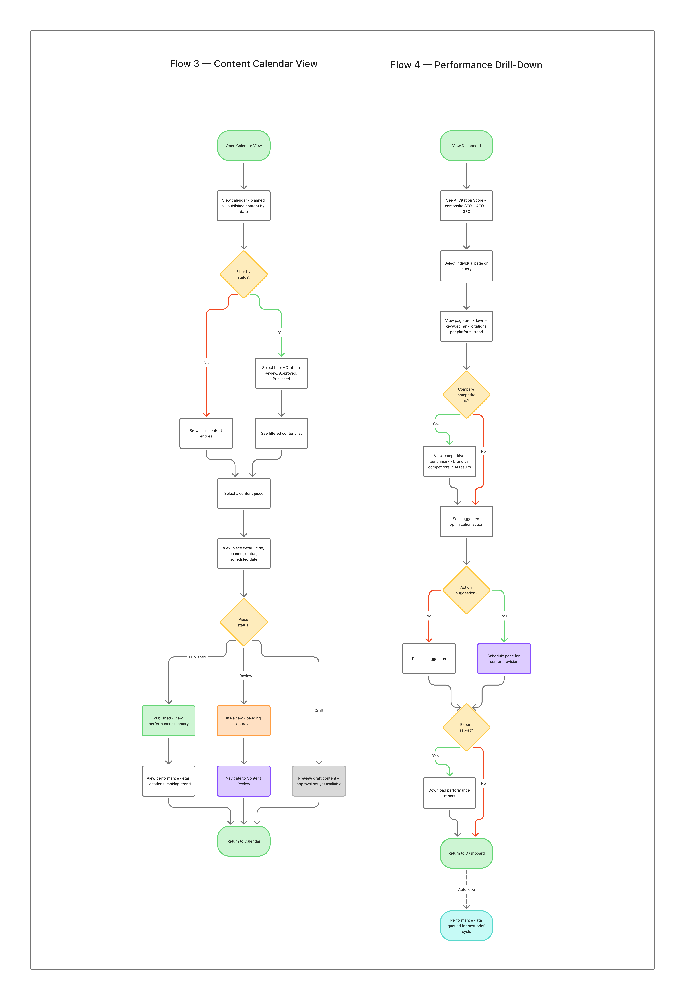
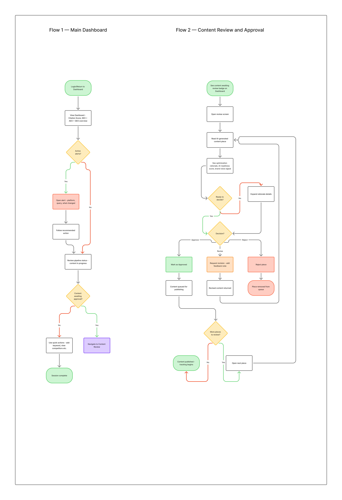
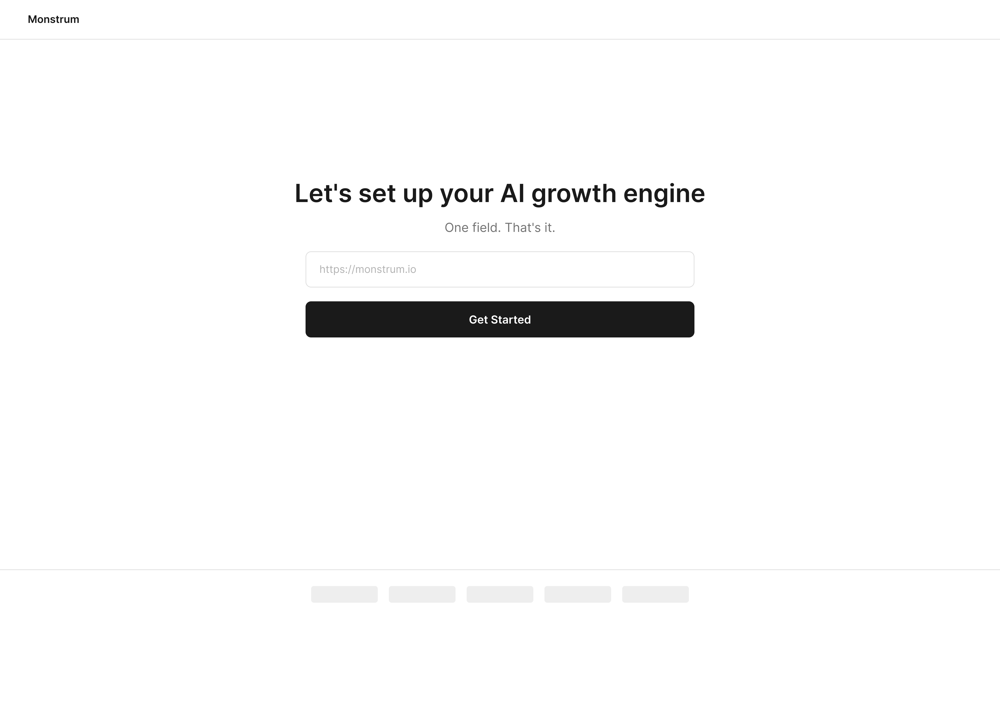
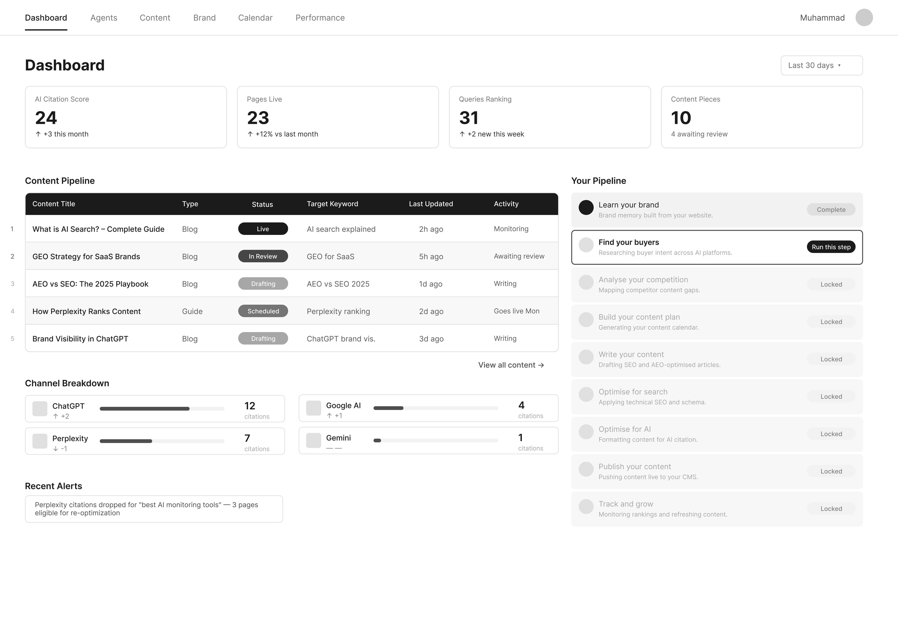
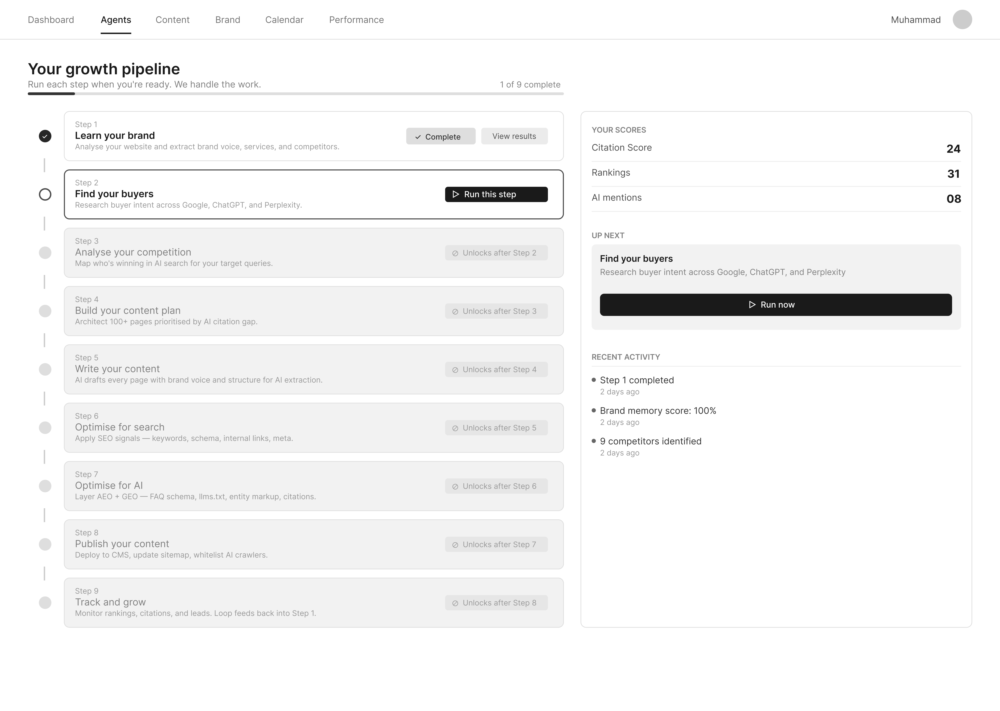
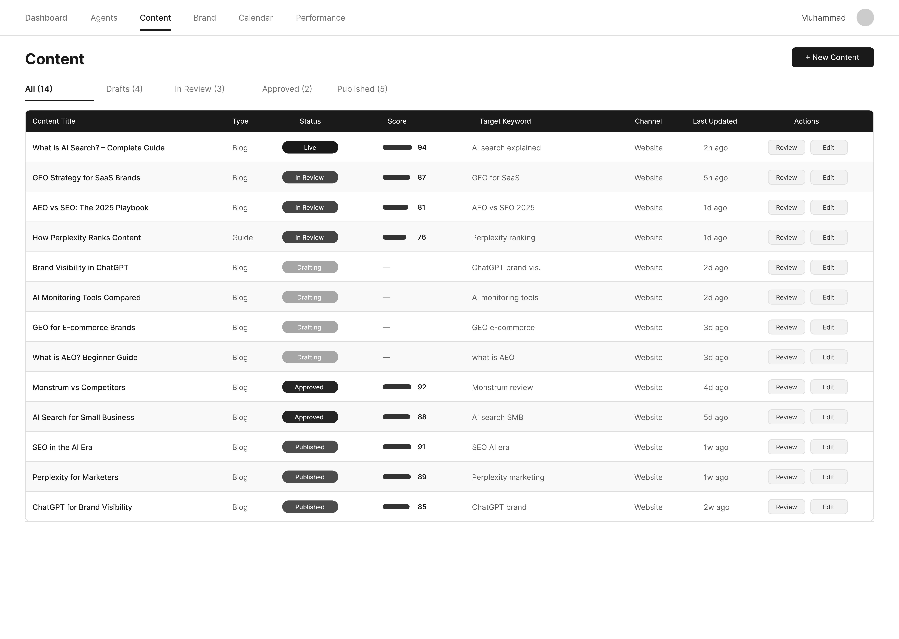
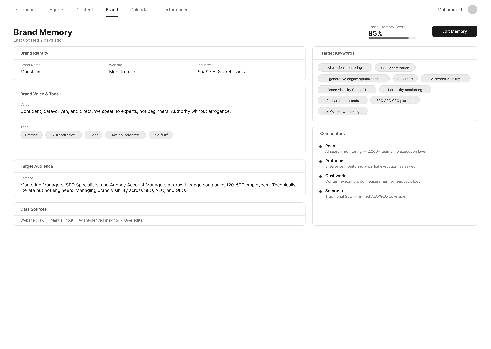

UX / UI · Product Design
In ProgressIn progress — high-fidelity design in development
Role
Product Designer
Sole designer
Screens
11 total
3 onboarding · 8 dashboard
Timeline
March 2026
Ongoing
Company
monstrum.digital
The Product
Monstrum is a design agency building an AI-powered growth engine that helps businesses become visible in AI search results like ChatGPT, Perplexity, and Google AI Overviews. It runs three layers simultaneously: SEO for Google rankings, AEO to get cited in AI-generated answers, and GEO to become the default source AI engines pull from. Twelve agents run a continuous pipeline covering research, content writing, optimization, publishing, and performance monitoring. The system compounds over time because performance data automatically feeds back into strategy without any manual work from the client.
Design Challenge
The core tension was making a 12-agent technical pipeline feel simple and trustworthy for a marketing manager who just wants to know if their brand is showing up.
I solved this in two ways. First, I abstracted the pipeline into 9 human-readable steps with three clear states: complete, active, and locked. Second, I replaced all agent references in the UI with plain language activity labels like Writing, Awaiting your review, and Goes live Mon.
Key Positioning
Monstrum isn't a category with an established interface pattern to design against. Profound, Peec, and Gushwork each solve one piece of the problem, but none of them run SEO, AEO, and GEO as a single compounding, client-facing pipeline. There was no existing dashboard to benchmark against for the exact problem I was solving.
That meant the information architecture, the core metric, and the interaction model all had to be defined from scratch. I couldn't adapt an existing UI pattern — I had to work from the pipeline logic and the business model directly, and build the product's vision alongside its interface. Every structural decision in this case study, from the 12-to-9-step abstraction to the AI Citation Score, came out of that starting position.
Research
I spent two weeks on competitive analysis before touching any screens. The three main competitors were Profound, Peec, and Gushwork.

G2 Winter 2026 AEO Category Leader
Profound is the G2 Winter 2026 AEO category leader with 140+ verified reviews. Strong on monitoring but the execution loop is incomplete.

Focused Monitoring, 2,000+ Teams
Peec is the benchmark for focused monitoring with over 2,000 teams and self-serve pricing. The structural limit is that it stops at insight and never executes. Every Peec client still needs a separate content team.

Content at Volume, No Measurement
Gushwork executes content at volume but has no measurement layer and no feedback loop.
The Gap I Found
No competitor runs SEO, AEO, and GEO in one compounding pipeline. That gap is Monstrum's core differentiator and it shaped every design decision I made. Three things follow from that gap that no competitor is building: GEO as a named, executed discipline; a compounding feedback loop where performance data updates strategy automatically; and an agency architecture with no client caps.
UX Flows


Key Screens
High-fidelity design in progress — screens below show the interaction model and content hierarchy.
Asks for one thing: a URL. The crawler runs automatically, extracts brand information, and presents findings as editable pill tags for the client to confirm or adjust. Three screens total.

Answers three questions in under 10 seconds: Am I showing up? What changed? What do I do next? Two states: a returning user view with live data and pipeline progress, and a new user empty state with a clear starting action.

Shows the full 9-step pipeline with step status, scores, and recent activity. No technical language is visible to the client anywhere on this page.

Work together as the content management surface. Content view shows all published and in-progress pieces with tab filters, status badges, SEO scores per row, and Review and Edit actions. Calendar shows the same content on a monthly grid with color-coded status indicators.

Two states: a read-only view showing everything the system knows about the brand, and an edit mode where every field becomes interactive.

Iteration
The wireframe went through a significant review process with the founder. The feedback was detailed, specific, and required multiple rounds of iteration.
The original onboarding screen listed items like Copy tone, Team info, and Testimonials. The feedback flagged that these labels would not apply to every type of business using the product. A law firm does not have testimonials the same way a SaaS company does. I rewrote every crawler item to be generic and action-based: Scanning your pages, Analysing your content, Mapping your structure, Finding social proof, Identifying competitors. The experience now feels relevant regardless of what industry the client is in.
The original design showed detected brand information as a flat list with no clear way to edit individual sections. The feedback asked for a modal container with a proper header, and a dedicated edit icon on each section so the client could target exactly what they wanted to change. I rebuilt the screen with a modal header reading "What we found," individual edit icons per section, and a clear separation between the confirmation action and the editing action.
The Content Pipeline table originally showed which agent was responsible for each piece of content: Agent 8, Agent 7, Agent 5. The feedback was direct: a marketing manager has no context for what those numbers mean and they create confusion rather than clarity. I removed every agent reference from the client-facing UI and replaced them with plain language descriptions of what is actually happening: Writing, Awaiting your review, Optimising for search, Goes live Mon. The column header changed from Agent to Activity.
The original design had a horizontal row of pipeline steps at the bottom of the Dashboard. The feedback identified two problems: the horizontal layout could not show enough information per step, and placing it at the bottom made it feel like an afterthought rather than the central mechanism of the product. I moved the pipeline to the right column, changed it to a vertical layout, and added a step description, status badge, and activity label to each step. The pipeline now reads as a primary feature rather than a secondary status indicator.
The first version showed zero values across all metric cards but gave the client no direction on what to do next. Someone landing on the product for the first time had no idea where to begin. The feedback pushed for a stronger empty state that removes any ambiguity. I redesigned the content pipeline area to show a focused empty state with the message "your content will appear here once your pipeline is running," paired with a single CTA button pointing to the first action. The pipeline section on the right was updated so Step 1 is the only active and highlighted item with a Start now button, while every other step is visibly locked and grayed out. The page now has one clear message: start here.
AI Process
Early wireframes were sped up using Claude Code, fed structured design brief files rather than freeform prompts — turning sketches into starting-point layouts faster. Every subsequent decision — structure, hierarchy, content, iteration based on feedback — was mine.
High-fidelity design is currently in progress. Remaining work: finalize the hi-fi visual system across all 11 screens, usability testing, and accessibility review.
Visit monstrum.digital